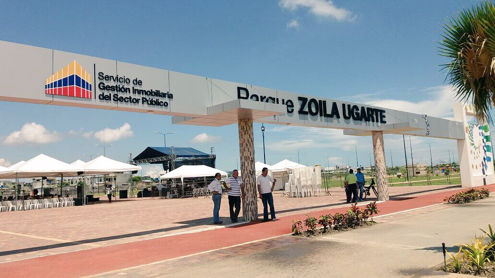
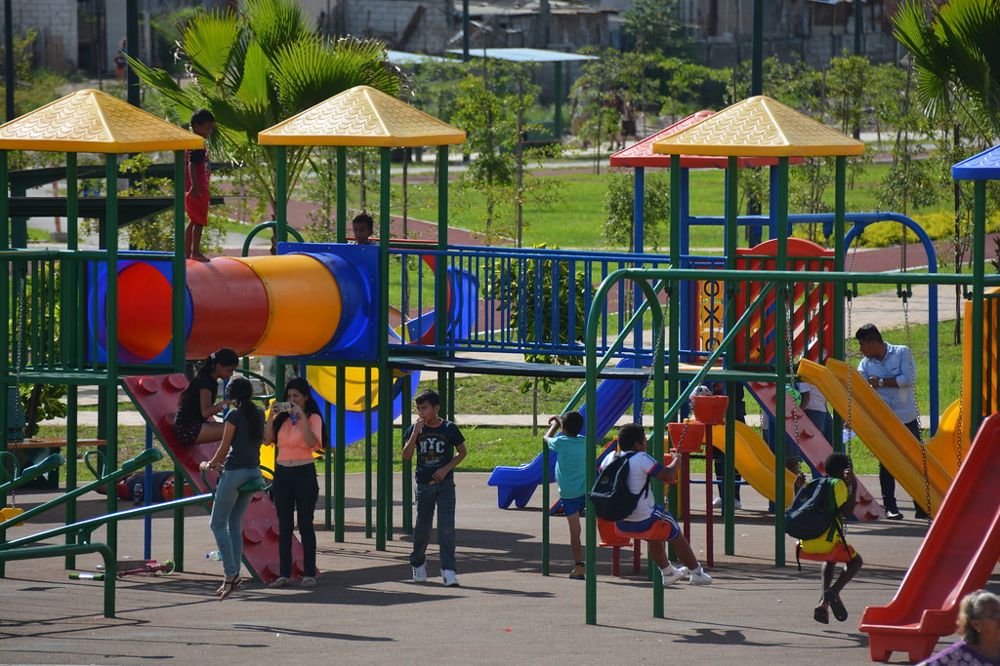

El Parque Zoila Ugarte de Landívar, conocido también como el "Parque Urbano de Machala", es uno de los espacios recreativos más importantes de la capital orense. Fue inaugurado el 16 de marzo de 2017 sobre los terrenos que anteriormente ocupaba el antiguo aeropuerto de Machala. Su construcción formó parte de un proyecto de regeneración urbana impulsado por el Gobierno Nacional para dotar a la ciudad de áreas verdes, transformando una pista de aterrizaje en desuso en un complejo de 15 hectáreas que incluye canchas deportivas, ciclovías, áreas de juegos infantiles y una concha acústica para eventos culturales.
El nombre del parque rinde homenaje a Zoila Ugarte de Landívar (1864–1969), ilustre orense nacida en El Guabo, quien fue la primera mujer periodista del Ecuador y una ferviente defensora de los derechos femeninos y el sufragio. A través de este espacio, la ciudad no solo busca mitigar el déficit de zonas recreativas, sino también preservar el legado de una mujer pionera en la educación y la política nacional. Actualmente, el parque es administrado por la Secretaría Técnica de Gestión Inmobiliaria del Sector Público (Inmobiliar) y se mantiene como el principal pulmón verde y punto de encuentro social de los machaleños.